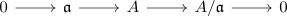

flat module and trivial tor functor
Proposition
Let $A$ be a commutative ring and $M$ an \(A\)-module.
TFAE:
- $M$ is flat
- for each $i > 0$ and \(A\)-module $N$, it holds for the Tor Functor
\begin{align*}
\mathrm{Tor}_i^A(M,N) = 0
\end{align*}
- for each \(A\)-module $N$, it holds for the Tor Functor
\begin{align*}
\mathrm{Tor}_1^A(M,N) = 0
\end{align*}
- for each ideal $\mathfrak{a} \subseteq A$ and the quotient ring $A/\mathfrak{a}$ the term
\begin{align*}
\mathrm{Tor}_1^A(A/\mathfrak{a}, N) = 0
\end{align*}
is zero
Proof
1) $\implies$ 2)
left derived functor of an exact functor
2) $\implies$ 3)
special case
3) $\implies$ 4)
speical case
4) $\implies$ 1)
note that by flat module and A-flat it suffices to check, if for each ideal $\mathfrak{a}$ the exact sequence

is preserved
This holds if and only if $\mathrm{Tor}_{1}^A(A/\mathfrak{a}, M) = 0$ in the long exact sequence of a derived functor.